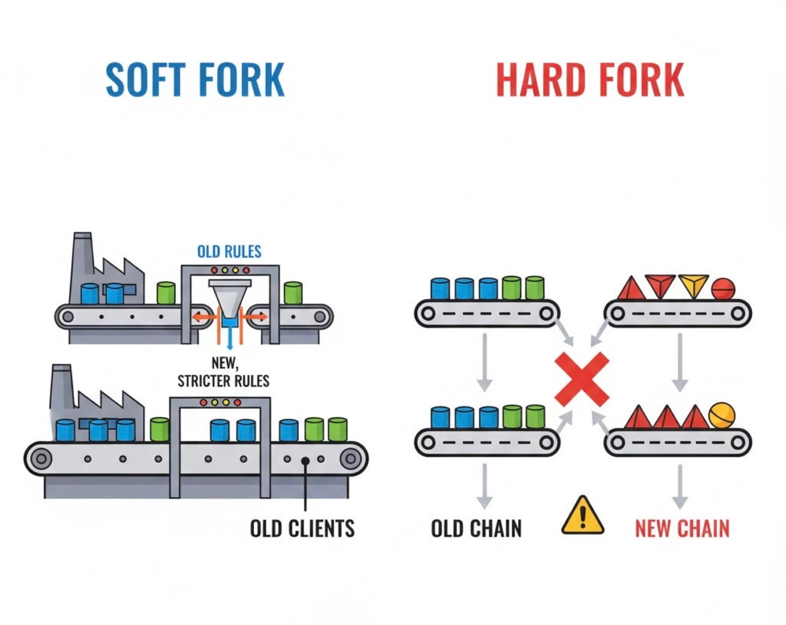

비트코인은 어떤 식으로 업그레이드되고, 또 어떤 식으로 나뉘었을까. 방식은 두 가지뿐이다. 발전시킨 건 소프트포크, 분리시킨 건 하드포크.

소프트포크 — 규칙을 더 엄격하게
기존 규칙을 강화하거나 새 규칙을 추가해서, 비트코인이 더 엄격하게 작동하도록 만드는 업그레이드 방식이다. 옛날 클라이언트도 새 블록을 여전히 유효하다고 받아들이는 게 핵심이라, 체인이 갈라지지 않는다.
사토시가 도입한 1MB 블록 크기 제한이 대표적인 예다. 비트코인이 처음 나왔을 땐 블록 크기 제한이 아예 없었는데, 2010년 7월 15일에 사토시가 코드를 하나 추가했다.
static const unsigned int MAX_BLOCK_SIZE = 1000000;이 코드는 2010년 7월 19일에 배포됐고, 79,400번째 블록부터 적용되도록 설정됐다. 이후 이 숫자 하나를 두고 몇 년째 전쟁이 벌어질 줄은 그때는 아무도 몰랐겠지.
하드포크 — 아예 갈라서기
네트워크를 둘로 쪼개는 방식이다. 체인이 분리되면서 서로 다른 코인이 양쪽 네트워크에 각각 존재하게 된다. 기존 걸 강화하는 게 아니라 아예 새로 만드는 거다. 비트코인캐시가 대표적인 사례.
이 방식은 모든 사용자가 기존 클라이언트를 지우고 새로 배포된 클라이언트로 교체해야 한다. 소프트포크와 달리 구버전이 신버전 블록을 거부하기 때문에, 어중간하게 걸쳐 있을 수가 없다.
소프트포크로 시작했다가 하드포크로 끝난 BIP-110
이론만 보면 둘은 깔끔하게 나뉘지만, 최근 BIP-110 사례를 보면 둘의 경계가 생각보다 유동적이라는 걸 알 수 있다.
BIP-110은 원래 1년짜리 한시적 소프트포크로 설계됐다. OP_RETURN을 비롯해 트랜잭션 안에 넣을 수 있는 임의의 비금융 데이터(이미지, 텍스트 등)를 제한하는 규칙 7개를 새로 도입해서, 비트코인 블록공간을 화폐 기능에 더 집중시키자는 취지였다. UASF(사용자 활성화 소프트포크) 방식으로, 채굴자가 아니라 노드 운영자들이 규칙을 밀어붙이는 구조였다.
961,632번 블록에서 강제 시그널링 기간이 시작됐는데, 채굴자 지지율이 2.5% 안팎에 머물렀다. 필요한 기준은 55%. 8월 8일, 결국 이 기준을 못 채우고 체인이 갈라졌다. 그런데 분리된 소수 체인은 해시파워가 거의 없다 보니 여덟 시간 동안 블록을 딱 2개밖에 못 캐고 사실상 멈춰버렸다.
여기서 끝났으면 그냥 '실패한 소프트포크 시도'로 남았을 텐데, 지지자들이 포기하지 않았다. 개발자 루크 대시주어가 작업증명 알고리즘 자체를 SHA-256d에서 Blake2b로 바꿔버린 거다. ASIC 채굴기가 지배하는 판을 우회해서 일반 CPU·GPU로도 채굴에 참여할 수 있게 하려는 목적이었다. 여기에 블록 크기도 300KB로 확 줄였다 — 비트코인 본체의 1MB 베이스, 4MB 웨이트 한도보다 훨씬 작은 값이다.
결과적으로 소프트포크 시도는 실패했지만, 그 실패를 발판 삼아 완전히 별개의 규칙과 작업증명을 가진 하드포크 체인으로 다시 태어난 셈이다. 최근엔 이 재기동된 체인에서 800개 넘는 블록이 채굴됐다는 소식도 들린다. 이게 오래갈지는 또 다른 문제고.
비트코인을 둘러싼 이런 전쟁과 역사를 더 알고 싶다면, 《블록사이즈 워》를 추천한다. 흥미진진 개꿀잼 서적이다.